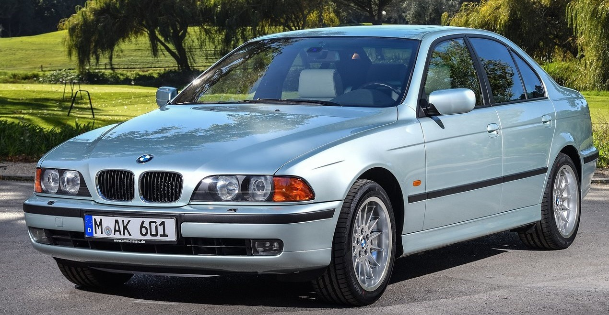
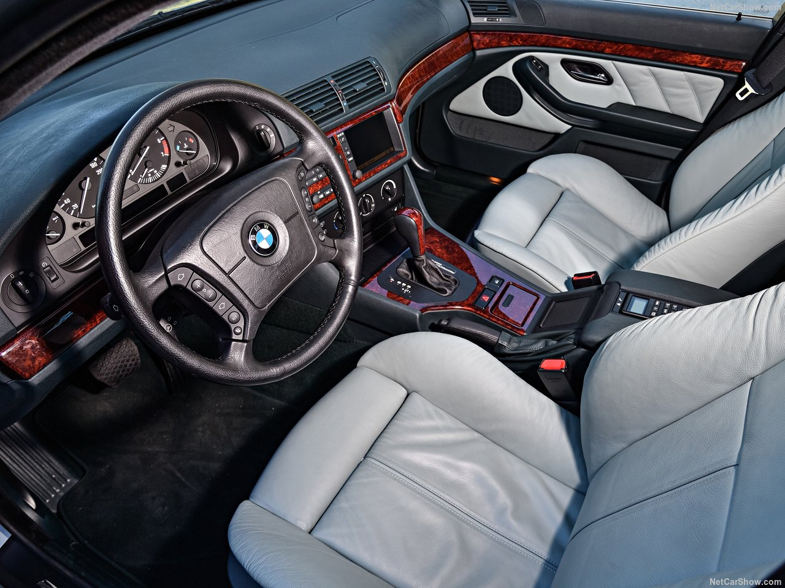

To say something is ‘running like a Swiss watch’ is to suggest it’s in perfect order, and that reliability and function are of no concern. However, what idiom can you use if you’re talking about an actual Swiss watch. You can’t say “this Swiss watch is running like a Swiss watch”. You’ll sound like a cretin. No, we need a new idiom, and we’d propose ‘running like an E39’. Truly, this is a car that is the wheeled embodiment of the Swiss watch. A car that has been with us for some twenty-five years, but that is still used as a benchmark for quality and vehicular engineering. It’s a car that, if you buy a decent one, will outlast all others. If it was a mineral, it would be granite. If it was a liquid, it would be honey. The E39 was a tour de force in terms what an executive saloon could be. And you’re sat there, reading this, thinking we’re gushing and flooding the page before you with positive prose because that’s the done thing. But we’re not. And if you want proof, just go and ask someone who has owned or who indeed still does own an E39. Much like pizza, even a bad E39 is good, because it’s still an E39. It is the high point on the timeline of the 5 Series. The last of the properly engineered Fives that were assembled with the help of men with hands, not just robots. It was a representation of BMW at the top of its game. Like the E38 7 Series, it was so popular that when the E60 was launched, dealerships were flooded with people wanting the older E39, not the new car. Dat ass, etc. Seriously, that is one handsome machine. It was penned by the talented Joji Nagashima in the early ’90s, and was locked-in by Chris Bangle in 1992.

Though of course, at this stage the mighty E34 was still in production. In fact, the E39 took a massive 39 months to fully develop, which just goes to how seriously BMW took this evolution of the model. No risks were being taken. The E34 5 Series was still doing a decent job in showrooms, so there was no pressure to rush the E39. Instead, BMW designers and engineers could create a fully resolved, no compromise car, which is exactly what they did. The E39 broke cover in 1994 care of some pictures direct from BMW. As soon as they hit the news desks of the world’s motoring press, ears were pricked well and truly up. A veritable Spock-fest of chatter and intrigue erupted. And in 1995 at the Frankfurt Motor Show, BMW pulled the covers off the E39 in front of actual people, and those actual people were impressed. This new, sleeker Five was unmistakably a Beemer, but more than that, it was unmistakably a Five. You looked up on and you could see that this was the natural evolution of the E34. That’s a hard thing to do right, but Nagashima and Bangle smashed it out of the park. As well you know, the E39 was a sales success from the off. At launch it was only available as a saloon, however an estate (or Touring to use the BMW nomenclature) was soon added to the lineup. The E39 was, make no mistake, aimed as the executive and luxury segments. However, it was a more than capable family car. Bigger and more refined than the E36 3 Series, the E39 could style it out in the office car park through the week, and play the role of family bus at the weekend. It was a car from a time before the car market was bombarded by SUVs, and it still stands as a reminder that a good saloon or estate makes for the best family car. Sill faux off-roaders are pointless. But that’s a rant for another time. So what did the E39 offer? Well, let’s look at the mechanical side of things first. Being a BMW, it was offered with roughly nine thousand engine options. However, what you need to know is this: the 2.0 six-cylinders are nice and smooth, but not fast. initially they had 150bhp, but this went up to 170bhp after the face-lift in 2000. The 523 was popular, but had no more power than the 520. The 525 was okay, but is rare. The 528 is excellent if you want a bit of pace, care of 190bhp.

However, the 530 is where it’s at with 230bhp. The 535 V8 is going to be a nail at this money, as is the 540, so ignore. If you want a diesel, the clattery 525tds is a decent, if unrefined lump. The 530d is a much better bet as it’s more modern and more refined. There was also a four-pot turbo diesel 2.0 engine, but this was in the late cars and as such isn’t really all that common in the £2,000 price bracket. If you must have your fuel compressed rather than ignited, the 530d is the one to go for. As for transmissions, all E39s were rear-wheel drive, which rules. As for actual cog-swapping, you could have a five-speed manual transmission (V8s got six), or a five-speed auto; either the GM 5L40-E, GM 5L40-E or ZF 5HP19 transmission depending on the year and model. Though do be aware, some early petrol models were fitted with a four-speed GM 4L30-E. The big selling point of the E39 is the drive. No matter the engine, the E39 is a rewarding, fun, engaging car to drive. You have that famed 50/50 weight distribution, which means the car is well balanced and has lots of poise despite being roughly the size of a canal barge. Furthermore, rack and pinion steering (apart from on the V8 cars) is direct and communicative. A 530i petrol with a manual ‘box is the kind of car you will be giddy to wind up and play with, but even a 520i will be fun, it just takes a bit more effort to get the most out of it. The thing is, however, with an E39 the drive is entirely dependent on how well it’s been looked after. You will want to buy a Sport, because this is the best looking and the most performance oriented. However, at this money a Sport will be leggy and probably won’t have been looked after all that well. Set your sights on, say, a 528i SE with a manual and you’ll be able to get one that’s been looked after, that doesn’t have destroyed suspension and bushes and that may even have lots of history. These are the cars to go for. Or a 525i. Though don’t be too fast to write the 520i off. It’s not the fastest given the heft of the E39, but it’s still a good car to drive and has more than enough power for every day use, it just won’t get your nipples erect on fast A roads. So should you buy one? Yes, absolutely. The time is very much now for the E39 5 Series, but that will change, have no doubt. The E28 went skyward, the E34 is going the same way. The E39 is bound to follow suit. It has a following and is recognised as being one of the best BMWs ever made. Despite this, you can still get a good one for not a lot of money at the moment. Service history, pleasing condition and a V5 that doesn’t read like a telephone book are all achievable. Yes, that will be the top end of your two grand, and yes there are much, much cheaper E39s, but a £500 example probably isn’t worth your time. Get one that’s been looked after and it’ll be the last car you ever need. Handsome, reliable, refined, safe (one of the first cars to have curtain airbags, and a EuroNCAP four-star car) and great to drive, it’s the complete package.